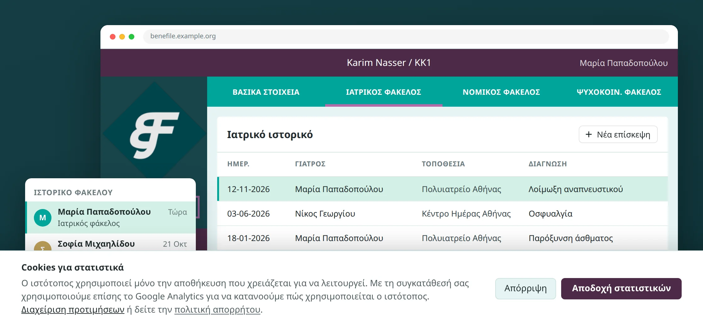
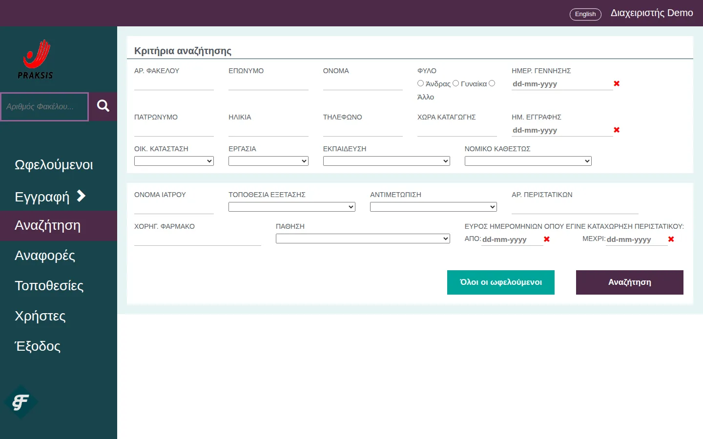
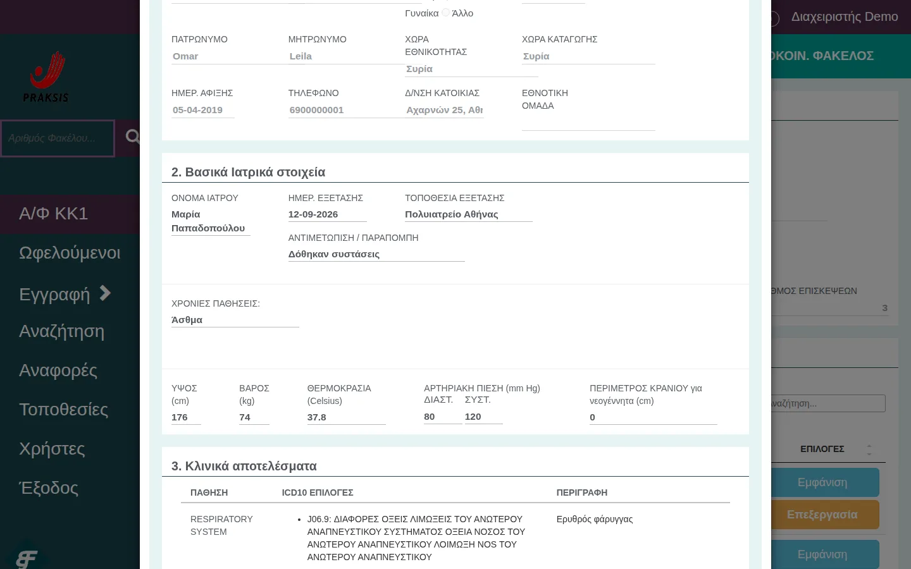
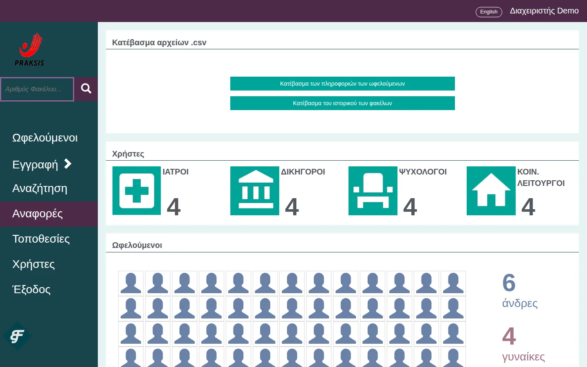
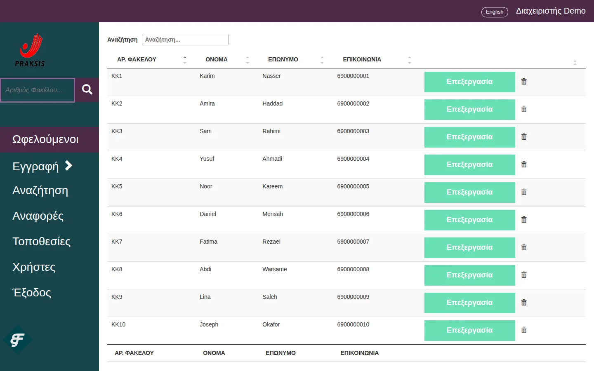
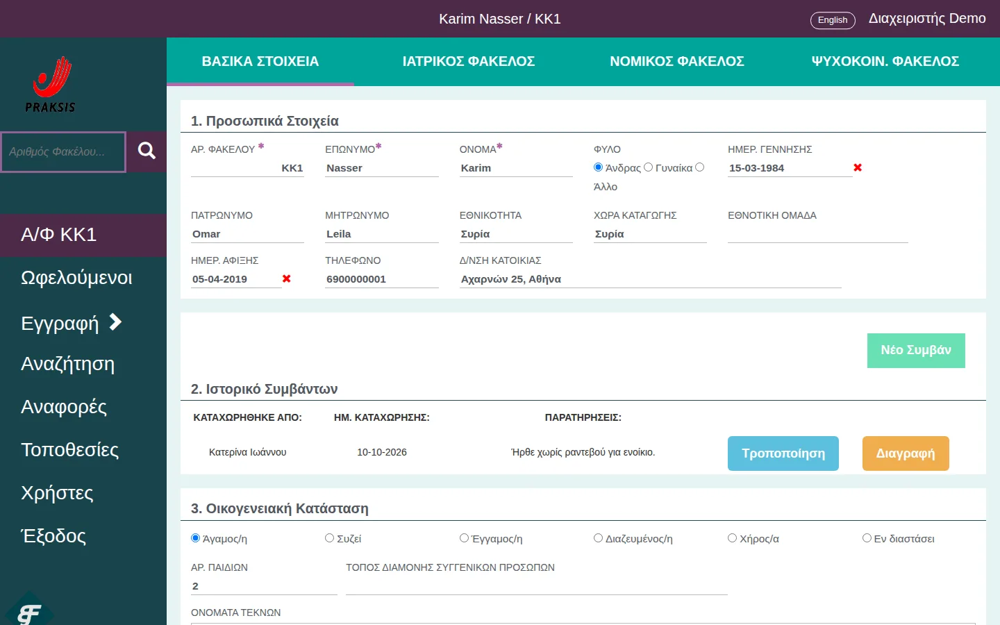
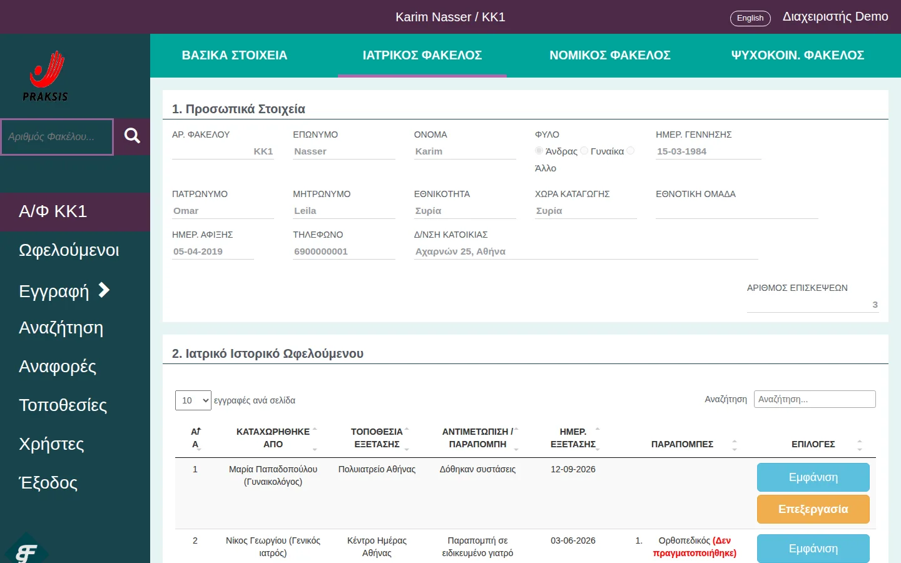
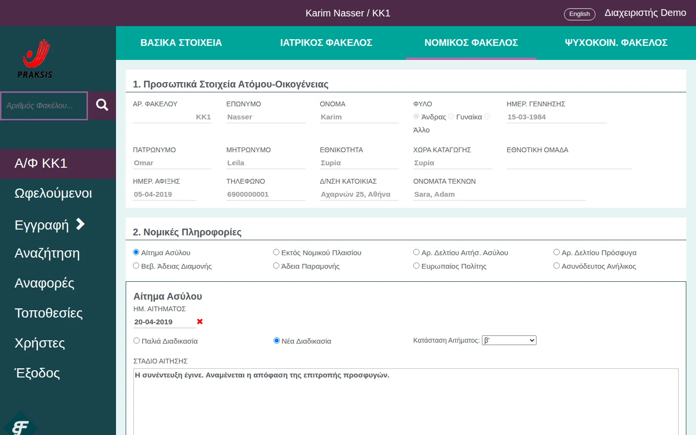
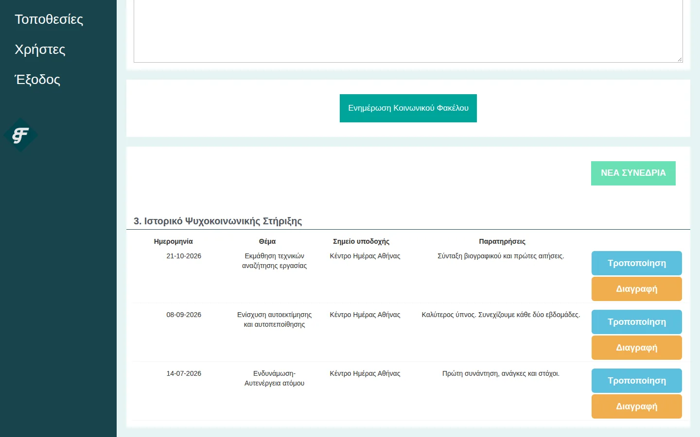
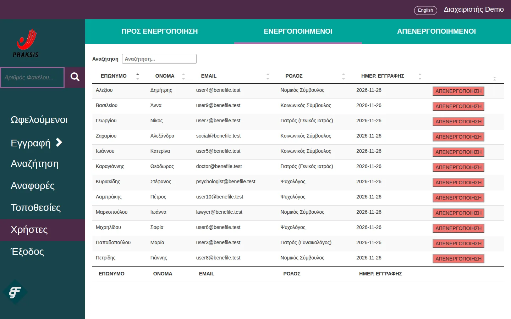

Δωρεάν και ανοιχτού κώδικα
Ένας ψηφιακός φάκελος για κάθε άνθρωπο που υποστηρίζετε
Το BeneFile κρατά σε ένα σημείο τον ιατρικό, νομικό και ψυχοκοινωνικό φάκελο των ωφελουμένων σας. Γιατροί, νομικοί, κοινωνικοί λειτουργοί και ψυχολόγοι δουλεύουν στον ίδιο φάκελο, ο καθένας στο δικό του τμήμα.

- 4 φάκελοι
- για κάθε άνθρωπο
- 5 ρόλοι
- με τα δικά τους δικαιώματα
- ICD-10
- διαγνώσεις στις ιατρικές επισκέψεις
- Αναφορές
- γραφήματα και εξαγωγή CSV
- Apache 2.0
- ελεύθερο για χρήση και αλλαγές
Ένας φάκελος, τέσσερα τμήματα
Όλα για έναν άνθρωπο, σε ένα σημείο
Κάθε ωφελούμενος έχει αριθμό φακέλου. Όλη η ομάδα βλέπει τα βασικά στοιχεία. Κάθε ειδικότητα καταγράφει τη δουλειά της στο δικό της τμήμα.
-
Βασικά στοιχεία
- Προσωπικά και οικογενειακά στοιχεία
- Γλώσσες και ανάγκη για διερμηνέα
- Νομικό καθεστώς, εκπαίδευση και εργασία
- Παραπομπές σε άλλες υπηρεσίες
- Έλεγχος για πιθανά διπλότυπα
-
Ιατρικός φάκελος
- Ιατρικές επισκέψεις, με τοποθεσία και γιατρό
- Ζωτικά σημεία: ύψος, βάρος, θερμοκρασία, πίεση
- Διαγνώσεις με κωδικούς ICD-10
- Φαρμακευτική αγωγή, με δοσολογία και διάρκεια
- Εργαστηριακά, νοσηλείες, παραπομπές
- Αρχεία, και εκτύπωση κάθε επίσκεψης
-
Νομικός φάκελος
- Αίτημα ασύλου και στάδιο
- Νομικό καθεστώς και έγγραφα
- Ενέργειες του νομικού συμβούλου
- Νομικές συνεδρίες, με σημειώσεις
-
Ψυχοκοινωνικός φάκελος
- Κοινωνικό ιστορικό
- Συνεδρίες υποστήριξης, ανά είδος υποστήριξης
- Σημειώσεις συνεδριών που βλέπουν μόνο οι ψυχολόγοι και οι διαχειριστές
Καθημερινή δουλειά
Φτιαγμένο για ομάδες με πολλή δουλειά
Βρείτε έναν άνθρωπο σε δευτερόλεπτα
Γράψτε τον αριθμό φακέλου στο μενού, ή αναζητήστε με πολλά κριτήρια μαζί: όνομα, ηλικία, χώρα, νομικό καθεστώς, γιατρό, τοποθεσία εξέτασης, πάθηση, φάρμακο, ημερομηνίες.

Κάθε επίσκεψη, πλήρης
Μια ιατρική επίσκεψη κρατά τον γιατρό και την τοποθεσία, τα ζωτικά σημεία, τις διαγνώσεις με κωδικούς ICD-10, τη φαρμακευτική αγωγή, τα εργαστηριακά και τα αρχεία. Ανοίξτε κάθε παλιά επίσκεψη από το ιστορικό, ή εκτυπώστε την.

Δείτε την εικόνα συνολικά
Η σελίδα αναφορών δείχνει με μια ματιά την ομάδα και τους ωφελούμενους: ανά φύλο, οικογενειακή κατάσταση, εκπαίδευση, τοποθεσία, γιατρό, πάθηση, και επισκέψεις και εγγραφές ανά μήνα.
Κατεβάστε όλους τους φακέλους, ή το ιστορικό όλης της δουλειάς, σε CSV, και εισάγετε ωφελούμενους από αρχείο CSV.

Ομάδες
Κάθε ρόλος κάνει τη δική του δουλειά
Οι νέοι χρήστες εγγράφονται, και ένας διαχειριστής τους ενεργοποιεί με τον ρόλο τους. Όταν κάποιος φεύγει, απενεργοποιείται: η δουλειά του μένει στους φακέλους.
- ΔιαχειριστέςΕνεργοποιούν χρήστες, διαχειρίζονται τις τοποθεσίες εξέτασης και μπορούν να διαγράψουν φακέλους.
- ΓιατροίΚαταχωρούν και αλλάζουν ιατρικές επισκέψεις. Κάθε γιατρός έχει ειδικότητα, για παράδειγμα παιδίατρος ή γυναικολόγος.
- Νομικοί σύμβουλοιΚρατούν τον νομικό φάκελο και τις νομικές συνεδρίες.
- Κοινωνικοί λειτουργοίΚρατούν το κοινωνικό ιστορικό στον ψυχοκοινωνικό φάκελο.
- ΨυχολόγοιΚαταγράφουν συνεδρίες υποστήριξης, με σημειώσεις που βλέπουν μόνο αυτοί και οι διαχειριστές.
Οθόνες
Το BeneFile στην πράξη
Η εφαρμογή είναι στα ελληνικά και στα αγγλικά. Επιλέξτε μια οθόνη για να τη δείτε σε πλήρες μέγεθος.

ΩφελούμενοιΗ λίστα όλων των φακέλων, με αναζήτηση και ταξινόμηση. 
Βασικά στοιχείαΠροσωπικά και οικογενειακά στοιχεία, νομικό καθεστώς, παραπομπές. 
Ιατρικός φάκελοςΌλες οι ιατρικές επισκέψεις ενός ανθρώπου. 
Νομικός φάκελοςΝομικό καθεστώς, αίτημα ασύλου και στάδιο. 
Ψυχοκοινωνικός φάκελοςΚοινωνικό ιστορικό και συνεδρίες υποστήριξης. 
ΧρήστεςΧρήστες προς ενεργοποίηση, ενεργοί και απενεργοποιημένοι.


Οι οθόνες δείχνουν δοκιμαστικά δεδομένα. Τα ονόματα δεν είναι πραγματικών ανθρώπων.
Εγκατάσταση
Εγκαταστήστε το στον δικό σας server
Το BeneFile είναι διαδικτυακή εφαρμογή. Το εγκαθιστάτε σε server του οργανισμού σας, ώστε οι φάκελοι των ανθρώπων που υποστηρίζετε να μένουν σε εσάς.
-
Κατεβάστε τον κώδικα
Το BeneFile είναι εφαρμογή Laravel. Χρειάζεται PHP 8.3 ή νεότερη και MySQL 8.
git clone https://github.com/scify/Benefile.git cd Benefile composer install --no-dev --optimize-autoloader -
Ρυθμίστε το
Φτιάξτε ένα αρχείο
.envαπό το.env.example, με τη βάση δεδομένων σας, τον server email, και το όνομα και το λογότυπο του οργανισμού σας. Μετά δημιουργήστε τους πίνακες, τις λίστες τιμών και τον πρώτο διαχειριστή.php artisan key:generate php artisan migrate --seed --force php artisan benefile:create-admin -
Καλέστε την ομάδα σας
Οι συνάδελφοί σας εγγράφονται στο
/auth/register. Ένας διαχειριστής ενεργοποιεί τον καθένα με τον ρόλο του.
Πριν το χρησιμοποιήσετε με πραγματικά δεδομένα. Οι ιατρικοί και νομικοί φάκελοι είναι ευαίσθητα δεδομένα: χρησιμοποιήστε HTTPS, κρατήστε αντίγραφα ασφαλείας, και εγκαθιστάτε τις ενημερώσεις ασφαλείας του Laravel και της PHP. Ο οδηγός εγκατάστασης (στα αγγλικά) έχει τις λεπτομέρειες.